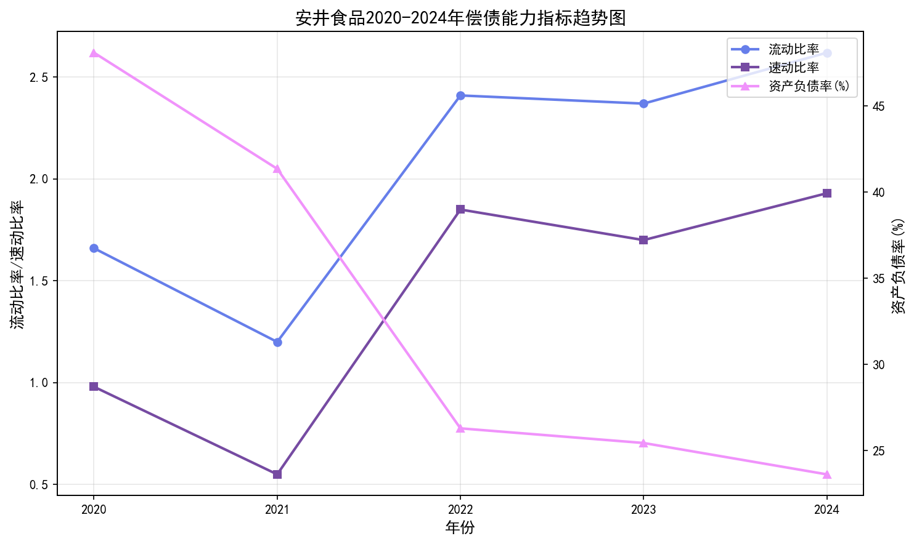
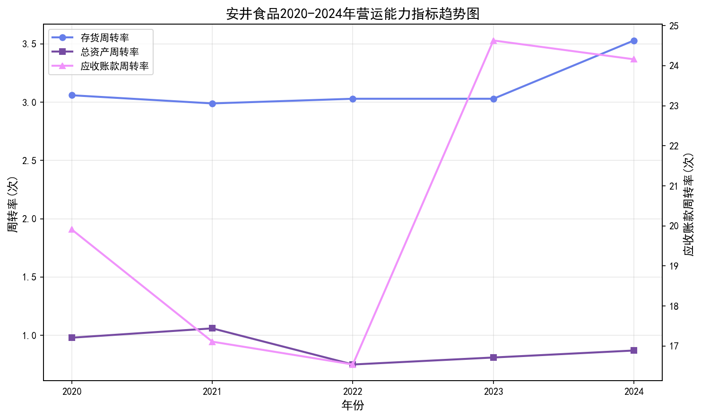
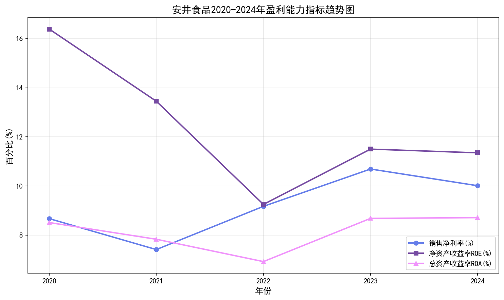
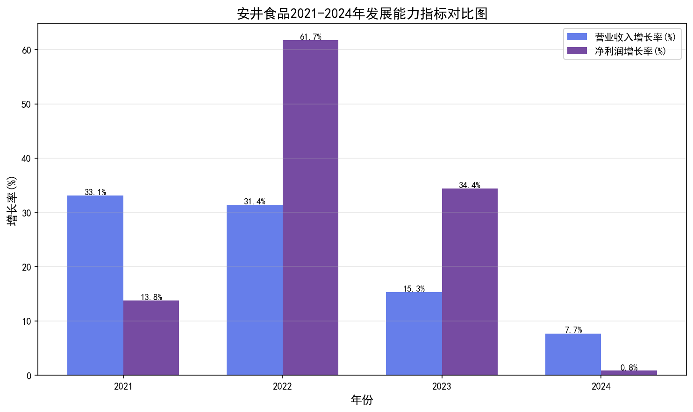
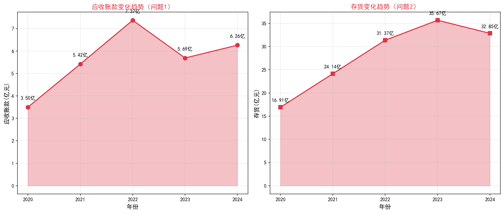
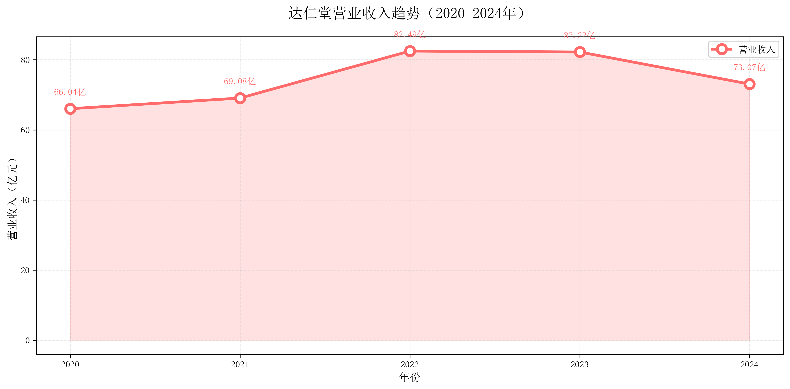
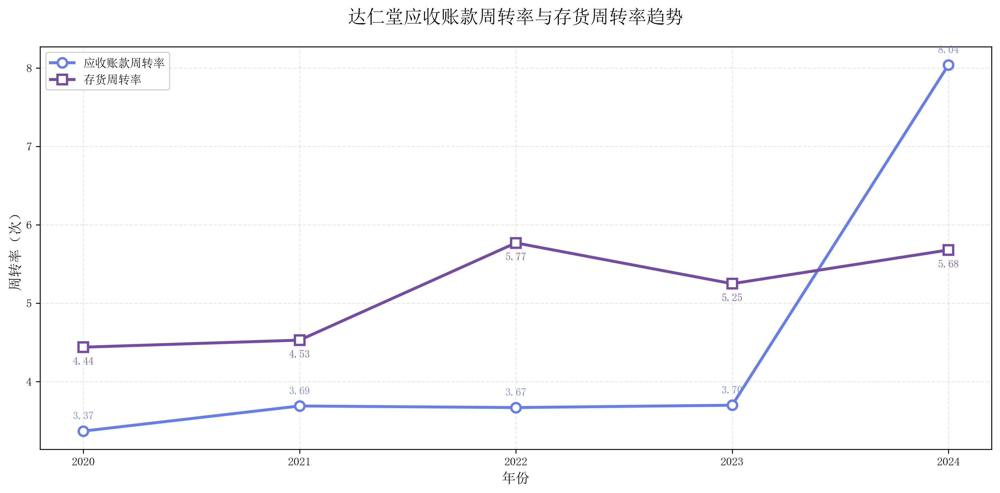
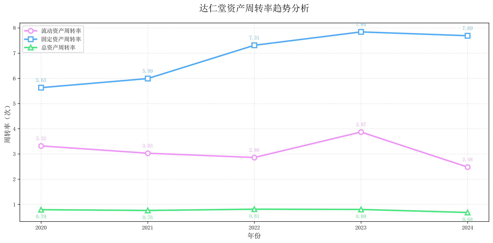

本科生毕业论文（设计）开题报告
安井食品并购新宏业动因及绩效分析
| 学院 | 经济管理学院 |
| 专业 | 会计学 |
| 班级 | 22本会计2班 |
| 学号 | 202299008892 |
| 姓名 | 吴宇萍 |
| 指导教师1 | 官晓风 |
| 指导教师2 |
第1章 绪论
1.1 研究背景与研究意义
1.1.1 研究背景
在全球经济一体化和市场竞争日益激烈的背景下，企业并购已成为企业实现快速扩张、优化资源配置、提升市场竞争力的重要战略手段。近年来,我国食品行业并购重组活动频繁，企业通过并购实现产业链整合、市场份额扩大和品牌价值提升。安井食品股份有限公司作为速冻食品行业的领军企业，自2001年成立以来，始终专注于速冻火锅料制品和速冻面米制品的研发、生产与销售。
2021年，安井食品通过并购新宏业食品有限公司，进一步完善了其产品线布局，拓展了市场渠道，增强了企业的综合竞争力。新宏业作为区域性知名速冻食品企业，在华东地区拥有稳定的客户群体和成熟的销售网络。此次并购不仅有助于安井食品实现规模经济效应，还能通过资源整合和协同效应提升企业的盈利能力和市场地位。
然而，并购并非总能带来预期的协同效应。部分企业在并购后面临整合困难、文化冲突、财务风险等问题，导致并购绩效不佳。因此，对安井食品并购新宏业的动因及绩效进行系统分析，不仅有助于评估此次并购的效果，还能为其他食品企业的并购决策提供理论参考和实践借鉴。
1.1.2 研究意义
（1）理论意义：本研究基于企业并购理论和财务绩效评价理论，对安井食品并购新宏业的动因和绩效进行深入分析，丰富了企业并购领域的理论研究。通过实证分析，验证并购理论在速冻食品行业的适用性，为并购绩效评价提供新的研究视角和分析框架。
（2）实践意义：通过对安井食品并购前后财务数据的对比分析，识别并购过程中存在的问题和风险，提出针对性的改进建议。研究结论可为安井食品后续的并购整合提供决策参考，同时也为食品行业其他企业的并购实践提供经验借鉴，帮助企业规避并购风险，提高并购成功率。
1.2 研究思路与研究方法
1.2.1 研究思路
本研究以安井食品并购新宏业为研究对象，首先梳理企业并购和财务绩效相关理论，构建分析框架；其次，收集安井食品2020-2024年的财务数据，以2020年为并购前基准年，2021年为并购当年，2022-2024年为并购后观察期；再次，从偿债能力、营运能力、盈利能力和发展能力四个维度对并购前后的财务绩效进行对比分析；最后，归纳总结并购过程中存在的问题，提出针对性的改进对策。
1.2.2 研究方法
（1）文献研究法：通过查阅国内外关于企业并购动因、并购绩效评价的相关文献，了解研究现状，为本研究提供理论基础。
（2）案例分析法：以安井食品并购新宏业为典型案例，对并购的全过程进行详细分析，深入探讨并购动因和绩效表现。
（3）财务指标分析法：运用流动比率、速动比率、资产负债率、净资产收益率、总资产周转率、营业收入增长率等财务指标，对并购前后企业的财务绩效进行量化评价。
（4）对比分析法：通过对比2020-2024年各项财务指标的变化趋势，分析并购对企业财务绩效的影响。
第2章 并购相关理论概述
2.1 并购概论
企业并购（Mergers and Acquisitions，M&A）是指一家企业通过购买另一家企业的股权或资产，从而获得对该企业的控制权或全部所有权的经济行为。并购包括兼并（Merger）和收购（Acquisition）两种形式。兼并是指两个或多个企业合并为一个新企业，原企业法人地位消失；收购是指一家企业通过购买目标企业的股权或资产获得控制权，目标企业法人地位可能保留。
并购动因主要包括：（1）实现规模经济效应，降低平均成本；（2）获取核心技术和优质资产；（3）拓展市场渠道，提高市场份额；（4）实现产业链整合，增强协同效应；（5）多元化经营，分散经营风险。
2.2 并购绩效概述及分析方法
2.2.1 并购绩效概述
并购绩效是指企业通过并购活动所实现的经济效益和战略目标的达成程度。并购绩效评价是衡量并购成功与否的重要标准，主要包括财务绩效和非财务绩效两个方面。财务绩效主要通过偿债能力、营运能力、盈利能力和发展能力等财务指标进行评价；非财务绩效则关注市场占有率、品牌价值、技术创新能力等方面。
2.2.2 财务指标分析方法
（1）偿债能力分析：通过流动比率、速动比率和资产负债率等指标，评估企业偿还短期和长期债务的能力。流动比率=流动资产/流动负债，一般认为流动比率在2:1左右较为合理；速动比率=（流动资产-存货）/流动负债，一般认为速动比率在1:1左右较为合理；资产负债率=负债总额/资产总额×100%，反映企业负债水平和财务风险。
（2）营运能力分析：通过存货周转率、应收账款周转率和总资产周转率等指标，评估企业资产管理效率。
（3）盈利能力分析：通过销售净利率、净资产收益率（ROE）和总资产收益率（ROA）等指标，评估企业的盈利水平。
（4）发展能力分析：通过营业收入增长率和净利润增长率等指标，评估企业的成长性。
第3章 安井食品并购新宏业动因分析
3.1 并购企业简介
3.1.1 并购方安井食品简介
安井食品股份有限公司成立于2001年，总部位于福建厦门，是一家专业从事速冻食品研发、生产和销售的现代化企业，主营业务包括速冻火锅料制品和速冻面米制品。公司于2017年在上海证券交易所上市（股票代码：603345）。
3.1.2 被并购方新宏业企业简介
新宏业食品有限公司是一家区域性速冻食品企业，主要生产和销售速冻火锅料、速冻调理肉制品等产品，在华东地区拥有较高的市场知名度和稳定的客户群体。
3.2 并购过程
2021年，安井食品经过审慎评估和尽职调查，决定收购新宏业食品有限公司的控股权。此次并购采用现金收购方式，交易完成后，新宏业成为安井食品的全资子公司。
3.3 并购动因分析
3.3.1 并购方安井食品动因分析
（1）实现规模经济效应：通过并购新宏业，安井食品能够扩大生产规模，降低单位产品的生产成本，提高整体盈利能力。
（2）拓展市场渠道：新宏业在华东地区拥有成熟的销售网络和稳定的客户资源。
（3）完善产品线布局：新宏业的产品线与安井食品具有一定的互补性。
3.3.2 被并购方新宏业动因分析
（1）借助品牌优势：通过与安井食品的合作，新宏业能够借助安井的品牌优势，提升自身的市场知名度和产品竞争力。
（2）拓展销售渠道：安井食品拥有全国性的销售网络和强大的渠道资源。
第4章 安井食品并购新宏业财务绩效分析 ⭐⭐⭐
4.1 财务绩效分析
分析时间段：
- 并购前基准年：2020年
- 并购当年：2021年
- 并购后观察期：2022年、2023年、2024年
4.1.1 偿债能力分析
从数据分析可以看出，2020-2024年流动比率整体呈上升趋势，资产负债率逐年下降，说明企业短期偿债能力增强，财务风险降低。

图4-1 安井食品2020-2024年偿债能力指标趋势图
| 年份 | 流动比率 | 速动比率 | 资产负债率(%) |
|---|---|---|---|
| 2020 | 1.66 | 0.98 | 48.09 |
| 2021 | 1.20 | 0.55 | 41.35 |
| 2022 | 2.41 | 1.85 | 26.29 |
| 2023 | 2.37 | 1.70 | 25.44 |
| 2024 | 2.62 | 1.93 | 23.62 |
4.1.2 营运能力分析
营运能力指标显示，存货周转率在并购后逐步回升，应收账款周转率在2023-2024年大幅提升。

图4-2 安井食品2020-2024年营运能力指标趋势图
| 年份 | 存货周转率(次) | 应收账款周转率(次) | 总资产周转率(次) |
|---|---|---|---|
| 2020 | 3.06 | 19.91 | 0.98 |
| 2021 | 2.99 | 17.11 | 1.06 |
| 2022 | 3.03 | 16.54 | 0.75 |
| 2023 | 3.03 | 24.63 | 0.81 |
| 2024 | 3.53 | 24.16 | 0.87 |
4.1.3 盈利能力分析
销售净利率在并购后快速回升并超过并购前水平，说明企业盈利能力增强。

图4-3 安井食品2020-2024年盈利能力指标趋势图
| 年份 | 销售净利率(%) | ROE(%) | ROA(%) |
|---|---|---|---|
| 2020 | 8.67 | 16.39 | 8.51 |
| 2021 | 7.41 | 13.45 | 7.83 |
| 2022 | 9.17 | 9.25 | 6.92 |
| 2023 | 10.69 | 11.50 | 8.68 |
| 2024 | 10.01 | 11.35 | 8.71 |
4.1.4 发展能力分析
并购后营业收入持续增长，但增速逐年放缓。净利润增长波动较大，2024年增速明显放缓。

图4-4 安井食品2021-2024年发展能力指标对比图
| 年份 | 营业收入增长率(%) | 净利润增长率(%) |
|---|---|---|
| 2021 | 33.12 | 13.75 |
| 2022 | 31.35 | 61.72 |
| 2023 | 15.29 | 34.36 |
| 2024 | 7.70 | 0.83 |
4.2 潜在问题研究（重点⭐⭐⭐）

图4-5 应收账款与存货变化趋势图（问题指标）
问题1：应收账款规模随业务扩张而增长，回款周期管理有待强化
现象：应收账款从2020年的3.50亿元增加到2024年的6.26亿元，增长78.86%。
原因分析：
（1）市场拓展推动信用销售规模扩大：并购后，安井食品积极拓展市场布局，为争取更多优质客户和市场份额，对具备良好信用资质的客户采取适度赊销策略，推动应收账款规模相应扩大。特别是新宏业原有客户群体的信用政策在整合期内保持延续性，使得应收账款回收周期呈现一定延长态势。
（2）客户结构优化调整影响回款节奏：并购整合过程中，安井食品的客户结构经历优化调整，部分新增客户的信用状况和回款能力存在差异。同时，速冻食品行业市场竞争较为充分，下游经销商在供应链中具备一定议价空间，企业为维护良好客户关系适度延长账期，使得应收账款回收节奏呈现阶段性放缓。
问题2：存货规模伴随产品线拓展而上升，库存管理精细化程度存在提升空间
现象：2021年存货从16.91亿元增加到24.14亿元，增长42.74%。2024年达到32.85亿元。
原因分析：
（1）产品线拓展推动库存品类结构调整：并购新宏业后，安井食品的产品种类实现显著丰富，涵盖火锅料、面米制品、调理肉制品等多个品类。产品线的战略性拓展使得企业需要储备更多种类的原材料和成品，推动库存规模相应扩大。同时，不同产品的生产周期和市场需求存在客观差异，对库存管理的精细化程度提出了更高要求。
（2）产销匹配处于磨合优化阶段：并购整合初期，安井食品对新宏业的生产能力和市场需求的精准预测处于持续优化过程中，部分产品的产销匹配存在调整周期。此外，速冻食品具有明显的季节性消费特征，旺季需求高、淡季需求低，企业为保障旺季市场供应能力需提前进行战略性备货，客观上推动了库存规模的阶段性上升。
问题3：短期流动性呈现阶段性调整，财务稳健性有待优化
现象：2021年并购当年资产负债率为41.35%，速动比率降至0.55，低于行业合理水平（1:1）。
原因分析：
（1）并购融资带来负债结构调整：安井食品采用现金收购方式并购新宏业，支付了大额并购款项。为筹集并购资金，企业适度增加了短期借款和长期借款，推动负债结构优化调整。2021年短期借款为2.56亿元，同时合同负债和应付账款等流动负债也相应增加，对短期流动性形成一定考验。
（2）整合期间营运资金配置需求上升：并购后，安井食品需要投入大量资金进行生产设施改造、管理体系整合和市场渠道拓展，推动营运资金配置需求提升。同时，新宏业原有的经营现金流在整合初期存在释放周期，使得企业整体资金运营呈现阶段性紧张态势。
问题4：总资产周转效率呈现下行趋势，资产配置效率存在优化空间
现象：总资产周转率从2021年的1.06次下降至2024年的0.87次，低于并购前2020年的0.98次。
原因分析：
（1）并购形成商誉推动资产规模扩张：此次并购产生了约7.39亿元的商誉，使得资产总额相应增加。商誉作为非流动资产，虽不直接产生收益，但计入资产总额，对总资产周转率产生稀释效应。同时，固定资产、在建工程等长期资产的配置也推动了资产规模的扩张。
（2）协同效应释放处于磨合期：并购后，安井食品积极拓展市场渠道和产品线，但整合过程需要时间，协同效应的释放存在客观周期性。新宏业的销售网络、生产设施和管理团队的整合处于持续推进阶段，资产规模扩张与收入增长之间的匹配呈现阶段性调整，资产配置效率存在进一步优化空间。
第5章 改善安井食品财务绩效的对策建议 ⭐⭐⭐
5.1 加强应收账款管理，优化信用政策
（1）建立客户信用评级体系：安井食品应建立完善的客户信用评级制度，对客户的财务状况、经营能力和历史信用记录进行综合评估，将客户分为不同信用等级，针对不同等级制定差异化的信用政策。
（2）加强应收账款监控和催收：建立应收账款动态监控机制，定期对账龄进行分析，重点关注账龄超过60天的应收账款。设立专门的应收账款催收团队，对逾期账款及时进行催收。
（3）优化销售结算方式：针对安井食品的速冻火锅料和速冻面米制品，可推广"先款后货"或"货到付款"的销售模式，减少赊销比例。对于季节性销售旺季，可通过提前预收定金的方式锁定订单。
5.2 优化库存管理，提升存货周转效率
（1）实施精益生产，降低库存水平：安井食品应引入精益生产管理理念，根据市场需求和销售预测制定生产计划，实现"以销定产"。对于火锅料、面米制品等不同产品线，可采用JIT（Just In Time）准时化生产模式。
（2）加强库存预警和清理机制：针对安井食品的速冻食品特性，应特别关注产品保质期，对临近保质期的产品及时处理，减少损耗。
（3）利用数字化技术提升库存管理效率：引入ERP系统和WMS仓储管理系统，实现库存信息的实时共享和精细化管理。对于新宏业子公司的库存管理，应与母公司系统对接，实现统一调度。
5.3 优化资本结构，提升资金使用效率
（1）合理安排融资结构，降低财务成本：安井食品应优化债务结构，适当降低短期借款比例，增加长期借款或发行债券等长期融资方式，延长债务到期期限，缓解短期偿债压力。
（2）加强现金流管理：针对速冻食品行业的季节性特征，应提前做好旺季资金需求预测，避免资金短缺影响生产经营。
（3）加强商誉减值风险管理：定期对并购形成的商誉进行减值测试，评估新宏业的经营状况和盈利能力。
5.4 深化并购整合，提升资产利用效率
（1）加强生产资源整合，提高产能利用率：安井食品应对自身和新宏业的生产设施进行统筹规划，避免产能重复建设和闲置。可将部分火锅料制品的生产任务在母公司和子公司之间合理分配。
（2）深化销售渠道整合：将新宏业的区域销售渠道与安井食品的全国性销售网络进行整合。安井的火锅料制品可借助新宏业在华东地区的渠道优势快速推广。
（3）加强技术和管理整合：将安井食品先进的生产技术、质量管理体系推广至新宏业，提升其技术水平和管理效率。
达仁堂营运能力分析 📊
营业收入数据

图：达仁堂2020-2024年营业收入趋势
| 年份 | 营业收入（亿元） |
|---|---|
| 2020年 | 66.04 |
| 2021年 | 69.08 |
| 2022年 | 82.49 |
| 2023年 | 82.22 |
| 2024年 | 73.07 |
应收账款周转率与存货周转率趋势

图：达仁堂2020-2024年应收账款周转率与存货周转率趋势对比
资产周转率趋势分析

图：达仁堂2020-2024年流动资产、固定资产、总资产周转率趋势分析
第6章 结论与展望
6.1 结论
本研究以安井食品并购新宏业为研究对象，通过对2020-2024年财务数据的系统分析，评估了此次并购的动因和财务绩效。研究得出以下结论：
（1）并购动因明确，战略意义重大。
（2）并购后财务绩效总体向好，营业收入和净利润持续增长。
（3）并购过程中存在应收账款增长过快、存货周转效率下降等问题需关注。
（4）整合效应尚未充分释放，需要持续加强管理整合和资源优化。
6.2 展望
（1）加强并购后整合管理，充分发挥协同效应。
（2）优化财务管理体系，提升营运资金使用效率。
（3）注重可持续发展，通过技术创新、产品升级和品牌建设增强核心竞争力。
（4）研究局限性：本研究主要基于财务指标进行分析，未来可结合非财务指标进行综合评价。
--- 完 ---